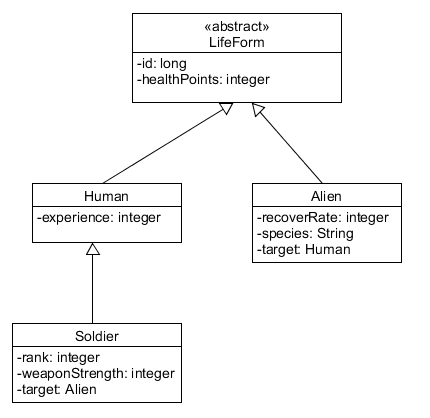

Inheritance vs. Relational DB
The result of a paradigm chasm. When we think about how to
store it, we worry about three things:
- How efficient is the storage? Are there wasted
columns?
- If things are spread across tables, how to we connect them
and what does it cost to retrieve them?
- If something changes in the inheritance hierarchy (add,
delete, move up, move down), how hard is it to adjust the DB?
Remember: we already have huge amounts of data in the
production DB, so any change is going to require reconfiguration of an
existing DB.
Example

Single Table Inheritance
One table with columns for every attribute in every class
For our example:
LifeForm:
- id: long
- type: integer (0 = human, 1 = soldier, 2 = alien)
- healthPoints: integer
- experience: integer
- species: varchar(25)
- recoverRate: integer
- rank: integer
- weaponStrength: integer
- soldierTarget: integer (is a LifeForm id)
- alienTarget: integer (is a LifeForm id)
Our three questions:
- How efficient is the storage? Are there wasted
columns?
- If things are spread across tables, how to we connect them
and what does it cost to retrieve them?
- If something changes in the inheritance hierarchy (add,
delete, move up, move down), how hard is it to adjust the DB?
Remember: we already have huge amounts of data in the
production DB, so any change is going to require reconfiguration of an
existing DB.
Things to think about from reading
"The single table may end up being too large, with many indexes and
frequent locking, which may hurt performance. You can avoid
this by having separate index tables that either list keys of rows that
have a certain property or that copy a subset of fields relevant to an
index"
"You only have a single namespace for fields, so you have to be sure
you don’t use the same name for different fields. Compound
names with the name of the class as a prefix or suffix help here."
Concrete Table Inheritance
One table for each concrete class
Substitution Principle
Formally:
Let phi(x) be a property provable and objects x of type
T. Then phi(y) should be true for objects y of type S where S
is a subtype of T.
Informally:
An instance of the subclass must be able to be substituted for any use
of the superclass.
Subclasses must enforce an “is-a” relationship with the superclass.
What does this do to id numbers if each concrete class has a table?
For our example:
Human:
-
humanOrSoldierId: Long
-
healthPoints: integer
-
experience: integer
Alien:
-
id: long
-
healthPoints: integer
-
species: varchar(25)
-
target: long (is a human or soldier ID)
Soldier:
-
humanOrSoldierId: Long
-
experience: integer
-
healthPoints: integer
-
rank: integer
-
weaponStrength: int
-
target: long (is an alien ID)
Our three questions:
- How efficient is the storage? Are there wasted
columns?
- If things are spread across tables, how to we connect them
and what does it cost to retrieve them?
- If something changes in the inheritance hierarchy (add,
delete, move up, move down), how hard is it to adjust the DB?
Remember: we already have huge amounts of data in the
production DB, so any change is going to require reconfiguration of an
existing DB.
Things to think about from reading
“Each table is self-contained and has no irrelevant fields.
As a result it makes good sense when used by other applications that
aren’t using the objects.”
When talking about keys:
“A classic example of where you need this is if you have a collection
of players and you’re using Identity Field (216) with table-wide
keys. If keys can be duplicated between the tables that map
the concrete classes, you’ll get multiple rows for a particular key
value.”
“You need a key allocation system that keeps track of key usage across
tables; “
“also, you can’t rely on the database’s primary key uniqueness
mechanism.”
“You can get around some of this by not having fields that are typed to
the superclass, but obviously that compromises the object model”
“For compound keys you can use a special key object as your ID field
for Identity Field (216). This key uses both the primary key of the
table and the table name to determine uniqueness.”
Talking about Figure 12.10 on p 295
“To implement referential integrity you need a link table that contains
foreign key columns for the charity functions and for the player.”
“The problem is that there’s no table for the player, so you can’t put
together a referential integrity constraint for the foreign key field
that takes either footballers or cricketers.”
“Your choice is to ignore referential integrity or must multiple link
tables, one for each of the actual tables in the database.”
Class Table Inheritance
One table for each class in the hierarchy
Human:
-
id: Long
-
experience: integer
Alien:
-
id: Long
-
species: varchar(25)
-
target: long (is a human or soldier ID)
Soldier:
-
id: Long
-
rank: integer
-
weaponStrength: int
-
target: long (is a LifeForm ID)
LifeForm:
-
id: Long
-
healthPoints: Integer
Our three questions:
- How efficient is the storage? Are there wasted
columns?
- If things are spread across tables, how to we connect them
and what does it cost to retrieve them?
- If something changes in the inheritance hierarchy (add,
delete, move up, move down), how hard is it to adjust the DB?
Remember: we already have huge amounts of data in the
production DB, so any change is going to require reconfiguration of an
existing DB.
Things to think about from reading
“How to link the corresponding rows of the database tables”
“Use a common primary key value. Since the superclass table has a row
for each row in the other tables, the primary keys are going to be
unique across the tables.”
“An alternative is to let each table have its own primary keys and use
foreign keys into the superclass table to tie the rows together. This strategy would let the dbms enforce referential integrity.”
So, how do we pick?
Tradeoffs are all about duplication of data, wasted space, and speed of
access
So, we have to think about:
-
What is required to access an object?
-
What is required to store an object?
-
How is the database affected by changes to the classes?
-
How is the database affected by changes to the structure of the
hierarchy?
-
How is the database affected by moving instance variables up or down
the hierarchy?
Single Table Inheritance
-
One table for access and updates
-
That one table will be locked for updates - lock contention
-
Robust to changes in class design and hierarchy
-
Wasted space
-
Logic for figuring out which class something belongs to is extra
Concrete Table Inheritance
-
No joins on access if you know the class and only one table updated on writes
- Searching for all members of a superclass requires a join with all descendent classes
-
No superclass lock contention
-
Brittle to changes in the classes
-
Change in a superclass can affect multiple tables
-
Robust to changes in hierarchy
Class Table Inheritance
-
Has a simple relation to the structure of the code
-
Is brittle to changes in the hierarchy, but not to changes in the
classes
-
Requires joins on access which is a performance issue
-
Updates affect multiple tables
-
Lock contention on abstract superclass tables